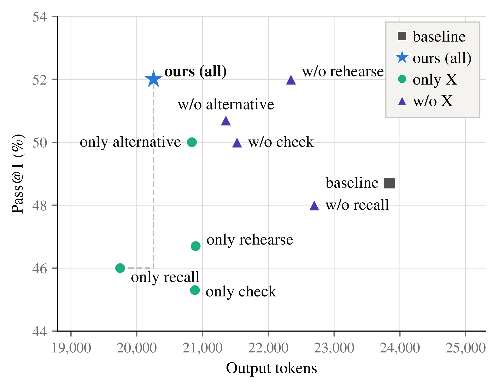

Agent 发出检索、测试或工具调用后，常要等待结果。主流程此时暂停推理，但已经形成的计划里可能还有未经检查的假设、忘记的约束和没准备好的后续分支。Second Thought 尝试利用这段时间，让同一个模型并行思考这些问题，并把已经完成的简短建议交给下一轮。
本文解读 Zhensu Sun、Chengran Yang 等人的 Second Thought: Reasoning in Parallel as LLM Agents Act and Observe，依据 2026 年 8 月 13 日提交的 arXiv v1。这是一种无需额外训练的推理时框架。理解其效果时，需要分别看任务成功率、主线程解码、实际等待时间和总费用。
一、课题解读：Agent 的等待时间能做什么
常见的 ReAct 循环先思考，接着生成动作或工具参数，再接收环境反馈，最后进入下一轮。增加思考可以帮助检查计划，却也可能让每次交互更慢。如果某些检查能和工具执行重叠，就有机会缩短后续思考或减少失败后的重试。
这个安排受到一个约束。工具尚未返回时，辅助推理只能依据已有历史和刚形成的计划。它可以提出“若搜索无结果，就改用符号查询”，需要下一轮根据真实结果选择是否采用。另一个约束是时间，工具随时可能返回，辅助分支必须允许中途停止。
二、相关文献解读：额外推理安排在什么时机
| 工作 | 核心做法 | 与本篇的连接 |
|---|---|---|
| ReAct | 交替进行推理、行动和观察 | 提供本文要改造的基本执行循环 |
| s1 | 通过预算强制延长或限制思考 | 本文将其思路适配为串行增加思考的计算预算对照 |
| Sleep-time Compute | 在用户查询到达之前，围绕已有上下文预先计算 | 同样研究推理时机，本篇使用每一轮工具行动和观察期间的时间窗口 |
Second Thought 选择在主线程完成当前思考后分叉，四个分支各给建议，环境返回时直接收集完整建议。主线程在下一轮结合真实反馈使用它们。
三、研究问题解读：并行多想能否改善交互效率
以下是我们的阅读归纳。
- 等待期间能生成多少有用的推理？ 分支必须承接当前状态，并能在不可预测的截止时刻留下完整内容。
- 这些推理是否帮助整个任务？ 需要和原始 Agent、相近额外推理预算的串行对照比较成功率、轮次和主线程 token。
- 解码减少能否变成真正的时间收益？ 还要检查并发争用、上下文读取费用、不同分支的贡献和不同任务的等待特征。
四、方法解读：思考结束后分叉，工具返回时收集
第一步：在当前 Thought 完成时复制上下文
主线程生成当前推理后，框架立即启动四个分支。它们获得相同的历史和刚完成的推理，再加入各自的短指令。分叉时间早于动作生成结束，因此窗口同时包括动作序列化和工具执行等待。
各分支使用同一基础模型，并关闭模型原生 thinking 模式，直接流式输出建议。共享的上下文前缀允许缓存复用。每个分支仍需读取历史并生成输出，后续费用分析会把这部分计入。方法部分
第二步：从四个方向补充当前计划
| 分支 | 检查什么 | 作用示例 |
|---|---|---|
| Check | 当前计划里的脆弱假设 | 提醒尚未确认项目使用哪种测试框架 |
| Recall | 历史中仍有效的要求 | 重新提醒不得改变旧接口的约束 |
| Rehearse | 可能结果对应的下一步 | 预先写出检索失败时的后续路径 |
| Alternative | 当前策略失效后的替代方案 | 提出何时切换到另一种解决方式 |
这些是同一条任务轨迹上的互补视角。它们不执行新的环境动作，当轮已经启动的行动仍由主线程完成。辅助建议的价值在于让下一轮少重复推导、少遗忘约束，或及时更换思路。
第三步：用可以中断的“原子思考”输出
每条建议包在 <thought>…</thought> 中，要求只表达一个局部要点、不超过 25 个词，也不依赖前后其他建议。这样，分支中途被打断时，之前闭合的条目仍可独立阅读。
观察到达后，框架取消仍在生成的分支，把输出截到最后一个闭合标签。每个方向最多保留五条，没有完成条目的分支就跳过。这保证了输出结构可解析，建议内容是否正确仍要结合真实反馈判断。
第四步：把建议接到工具反馈后面
框架将收集的条目附加到工具消息末尾，主线程按“已有推理、动作、真实观察、辅助建议”的顺序进入下一轮。主流程不等待四个分支全部结束。
例如原论文的修 bug 示意中，Recall 提醒向后兼容约束，Rehearse 准备搜索失败的备选路径。这解释了辅助建议可能怎样减少返工，整体效果仍需下面的任务实验验证。
五、实验设计与结果：先看完整任务的表现
主实验：九组模型与任务组合的成功率和执行量
作者测试三个模型家族，DeepSeek-V4-Flash、Qwen3.6-Plus 和 MiniMax-M3，均开启主线程原生推理。任务覆盖三个环境。
- SWE-Bench Pro 随机抽取 150 个仓库修复任务，使用 mini-SWE-agent，限制 100 轮，通过隐藏测试评价补丁。
- Terminal-Bench 2.1 使用 89 个终端任务，由任务验证脚本评价。
- τ³-bench banking 文中报告 97 个任务，Agent 面对模拟用户，通过工具检索政策材料并回答问题。
下面按原 Table 1 整理原始 Agent 与四分支方法，成功率越高越好，主线程输出和轮次越低通常越有利。主线程输出不包含辅助分支的全部开销。
| 基准 / 模型 | Pass@1，原始 → 本文 | 平均主线程输出 tokens，原始 → 本文 | 平均轮次，原始 → 本文 |
|---|---|---|---|
| SWE-Pro / DeepSeek | 48.7% → 52.0% | 23,841 → 20,255 | 56.2 → 52.8 |
| SWE-Pro / Qwen | 52.0% → 51.3% | 36,519 → 20,798 | 57.1 → 50.6 |
| SWE-Pro / MiniMax | 55.3% → 55.3% | 15,400 → 14,579 | 79.6 → 71.9 |
| Terminal / DeepSeek | 50.6% → 52.8% | 48,202 → 32,892 | 40.2 → 35.8 |
| Terminal / Qwen | 39.3% → 51.7% | 25,158 → 31,396 | 25.5 → 24.0 |
| Terminal / MiniMax | 49.4% → 59.6% | 36,686 → 36,705 | 44.6 → 43.1 |
| τ³ / DeepSeek | 24.0% → 24.0% | 16,260 → 15,203 | 27.5 → 26.3 |
| τ³ / Qwen | 16.7% → 19.8% | 16,755 → 13,764 | 26.1 → 25.9 |
| τ³ / MiniMax | 17.7% → 20.8% | 10,004 → 10,367 | 24.0 → 20.0 |
来源：Table 1，PDF 第 5 页。成功率使用 BH 校正后的 McNemar 检验，其余指标使用配对 Wilcoxon 检验。这里列出完整数值，显著性结论按下文说明。
九组平均轮次都下降，其中五组达到显著；六组主线程 token 下降，其中四组达到显著。七组成功率差异未达显著，另外两组显著提高，分别是 Terminal 上 Qwen 的 +12.4 个百分点和 MiniMax 的 +10.2 个百分点。未达显著不等于已经证明两种方法严格等效。
最大的主线程 token 降幅约 43%，来自 SWE-Pro 的 Qwen。但在 Terminal 的 Qwen 上，主线程 token 反而增加约 24.8%，同时成功率提高。并行建议既可能替代后续思考，也可能让 Agent 探索更多有用方向。
额外计算相近时，串行延长思考能否得到同样效果
作者把 s1 的预算强制思路适配到当前 Agent，让主线程在本想结束 Thought 时继续推理，达到辅助分支对应的额外预算。在可运行的四组模型—基准组合中，本文方法成功率均高于 s1，主线程输出更少。
例如 SWE-Pro 的 Qwen，s1 为 48.7% / 65,634 tokens，本文方法为 51.3% / 20,798 tokens；Terminal 的 Qwen，s1 为 46.1% / 40,642 tokens，本文为 51.7% / 31,396 tokens。MiniMax 不支持所需前缀续写，τ³ 的函数调用也不兼容该控制，因此这些设置没有 s1 对照。比较支持当前并行组织方式的价值，但没有单独隔离调度与四类提示内容的贡献。
真正的等待时间：在配对回放中节省 10.9%
主实验跨时间段调用 API，服务速度和服务器负载会漂移。作者另对 50 个 SWE-Pro 任务、DeepSeek-V4-Flash做配对回放，同一任务的两种配置相邻运行、并发固定为四，重复三次取中位数。
中位每任务时间从 256.9 秒降到 229.0 秒，减少 10.9%。主线程解码时间从 168.7 到 146.1 秒，工具执行时间从 71.6 到 67.3 秒。同时主线程吞吐从 141.3 到 138.6 tokens/s，下降约 1.9%，说明并发确实带来争用。这是一个模型与子集上的实际时间证据，43% 的 token 降幅不能直接写成全面加速 43%。深入分析，PDF 第 6 页
分支和窗口分析：有更多输出不一定更有用

仅 Recall 时为 46.0% / 19.7k tokens，完整方法为 52.0% / 20.3k。去掉 Recall 后为 48.0%，去掉 Rehearse 则保持 52.0%、输出增加到 22.4k。这些结果来自同一模型和任务集，说明保留约束与预演下一步可能承担不同作用。
Table 2 进一步比较分叉上下文和截止方式。去掉刚完成的推理后，条目更多，成功率却从 52.0% 降到 49.3%。若工具返回后继续等待分支完成，成功率升到 56.7%，串行解码负担也增至 48.4k tokens。这体现了效果和等待预算的取舍，尚未给出所有任务通用的最优窗口。
总成本：减少关键路径，仍需为额外分支付费
| SWE-Pro 模型 | 原始每任务美元 | 四分支每任务美元 | 原表报告涨幅 |
|---|---|---|---|
| DeepSeek-V4-Flash | 0.015 | 0.025 | +66.4% |
| Qwen3.6-Plus | 0.514 | 1.297 | +152.2% |
| MiniMax-M3 | 0.159 | 0.448 | +181.5% |
来源：Table 3，PDF 第 7 页，按作者采用的 2026 年 7 月 1 日供应商价格计算。金额已四舍五入，涨幅沿用原表。
费用主要受额外的上下文读取和供应商缓存折扣影响。只保留 Alternative 时，作者报告新增费用降为 16.3%–35.5%，对应的分支消融也说明减少分支会改变成功率与输出的折中。这里能节省的是关键路径上的一部分解码和轮次，部署时还要同时检查总费用、并发配额与服务负载。
六、我们自己的思考
课题思考：这个领域在研究什么
这项工作让推理时机成为 Agent 设计的一部分。相同的模型可以在等待反馈时提前恢复约束、准备分支，下一轮再结合事实决策。对科研 Agent，长时间检索或实验执行也可能提供类似窗口，但辅助建议需要明确保留“待结果确认”的条件。
局限问题思考：目前还存在哪些问题
- 时间收益受服务条件影响。 实测延迟只覆盖一个模型的 50 题子集，并发时已经出现吞吐下降，短工具调用可留下的有效思考更少。
- 更多建议可能带来费用和错误前提。 分支在真实结果到达前生成，完整标签只保证格式。固定四分支还可能产生重复建议并增加上下文读取。
- 对照的覆盖仍有限。 s1 只在四组设置适用，分支和窗口分析主要围绕一个模型、一个基准，成功率无显著变化也需要更多重复来界定差异范围。
解决方案思考：这些问题有哪些解决方向
- 在不同服务负载和工具时延下测量。 同时报成功率、延迟分位数和总账单，检查高并发下是否仍有收益，并避免把 token 直接当成秒数。
- 按窗口和信息价值选择分支。 估计等待长度，动态决定是否启动及启动几路；把条件建议与已验证事实分开，测量采纳错误预测的情况。
- 扩展同预算的成对实验。 固定提示内容比较串行与并行，增加独立重复和更多任务，并在科研流程中检验实验等待期间生成的建议是否减少返工。
依据 论文 v1 PDF及其源文件。图示为原文 Figures 2、3，署名 Zhensu Sun、Chengran Yang、Yunbo Lyu、Jieke Shi、David Lo，未改绘。论文使用 arXiv 非独占分发许可，原图版权归作者，具体来源与文件哈希见素材清单。论文提供的代码入口本次访问返回认证要求，本文方法与数字按论文及源文件核对。